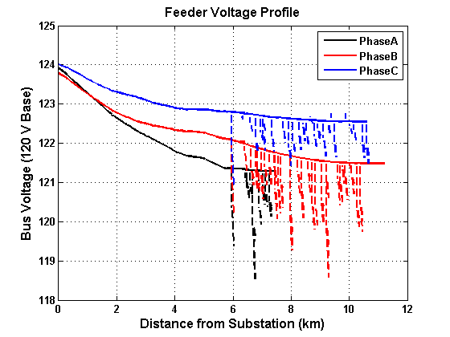
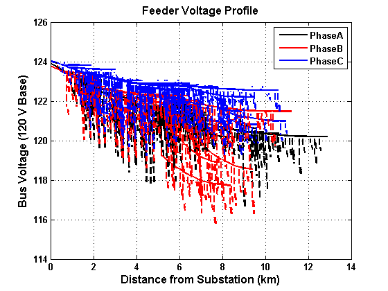
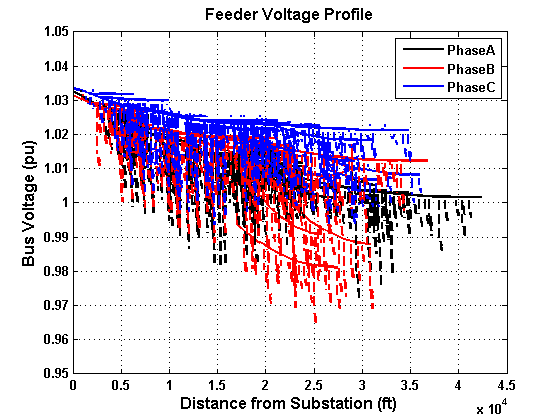
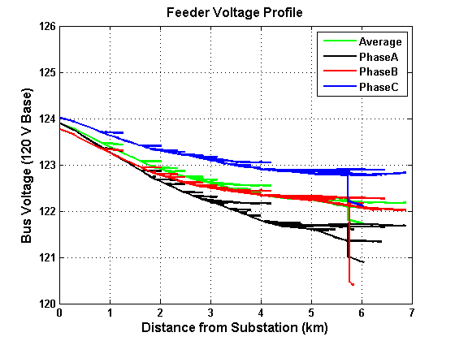
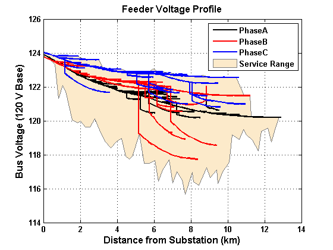
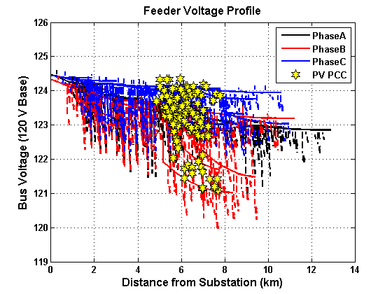

plotVoltageProfile
Plots the voltage profile for the feeder (spider plot)
Contents
Syntax
plotVoltageProfile(DSSCircObj); plotVoltageProfile(DSSCircObj, _'PropertyName'_ ,PropertyValue); Handles = plotVoltageProfile(DSSCircObj, _'PropertyName'_ ,PropertyValue);
Description
Function to plot the voltage profile for the feeder. This is the bus voltage vs. distance from the substation plot. Also called a spider plot. Clicking on objects in the figure will display the name of the object, and right clicking will give a menu for viewing properties of the object.
Inputs
- DSSCircObj - link to OpenDSS active circuit and command text (from DSSStartup)
- Properties - optional properties as one or more name-value pairs in any order
- -- 'SecondarySystem' - Property for if the secondary system (<600V) should be plotted (if it exists) {'on'} | 'off'
- -- 'Only3Phase' - Property for if only 3-phase power lines should be plotted 'on' | {'off'}
- -- 'AveragePhase' - Property for if the average voltage should be plotted alone or in addition to the phase plots 'on' | {'off'} | 'addition'
- -- 'LineToLine' - Property for if the voltage should be line-to-neutral or line-to-line 'on' | {'off'}
- -- 'VoltScale' - Property for the y-axis voltage scale {'120'} | 'pu'
- -- 'DistanceScale' - Property for the x-axis distance scale {'km'} | 'mi' | 'ft'
- -- 'BackgroundShade' - Property for if the range of voltage values should be shaded as an area 'on' | {'off'}
- -- 'BusName' - Property for the name of the bus (string) that the voltage profile should be plotted to. Only the direct line between the bus and the substation will be plotted, unless all buses are selected. {'all'} | busName
- -- 'Downstream' - If a BusName is given, all buses in the electrical path to the substation (upstream) will be plotted, and if this property is on, all buses in the electrical path downstream of BusName will be plotted too 'on' | {'off'}
- -- 'PVMarker' - Property for if the PV PCC should be marked {'on'} | 'off'
- -- 'CapacitorMarker' - Property for if capacitors should be marked 'on' | {'off'}
- -- 'Lines' - Structure of the circuit lines from getLineInfo. If no input is given, the structure is filled from the most current power flow solution in DSSCircObj COM.
- -- 'Transformers' - Structure of the circuit transformers from getTransformerInfo. If no input is given, the structure is filled from the most current power flow solution in DSSCircObj COM.
- -- 'Capacitors' - Structure of the Capacitors from getCapacitorInfo. If no input is given, the structure is filled from the most current power flow solution in DSSCircObj COM.
- -- 'PV' - Structure of the PV from getPVInfo. If no input is given, the structure is filled from the most current power flow solution in DSSCircObj COM.
Outputs
- Handles - structure of handles for each type of object plotted in the figure
- a figure is displayed with the plot
Notes
For the right-click visualizations, the AllowForms field of DSSCircObj must be set to 1, which is the default value. Currently, OpenDSS 7.6.3 (the current version as of this writing) does not allow for setting the AllowForms field back to 1 after setting it to 0.
Example
Example of a feeder voltage profile plot
[DSSCircObj, DSSText, gridpvPath] = DSSStartup; DSSText.command = ['Compile "' gridpvPath 'ExampleCircuit\master_Ckt24.dss"']; DSSText.command = 'solve'; figure; plotVoltageProfile(DSSCircObj,'BusName','N292743','Downstream','on'); figure; plotVoltageProfile(DSSCircObj); figure; plotVoltageProfile(DSSCircObj,'DistanceScale','ft','VoltScale','pu'); figure; plotVoltageProfile(DSSCircObj,'SecondarySystem','off','AveragePhase','addition','Only3Phase','on'); figure; plotVoltageProfile(DSSCircObj,'BackgroundShade','on','SecondarySystem','off'); DSSText.command = ['Compile "' gridpvPath 'ExampleCircuit\Ckt24_PV_Distributed_7_5.dss"']; DSSText.command = 'Set mode=duty number=1 hour=12 h=1 sec=0'; DSSText.command = 'Set controlmode=static'; DSSText.command = 'solve'; figure; plotVoltageProfile(DSSCircObj); %     